Learn by doing
Mini tutorials for staff
Walk through real screens with demo classes and lessons. Focus: Teacher Planner (setting up your classes) and Classroom Toolkit (launching tools in a lesson).
What’s inside
Two deep tutorials + a short tracker bonus
Teacher Planner
Put your classes on a timetable, plan the week, build a lesson bank, reuse lessons.
Classroom Toolkit
Favourite tools, run Big Timer, host a quiz, exit tickets & live checks.
Tracker classes
Quick parallel: set up a BGE class and open Enter Scores.
Screens marked Demo use fictional classes (1A Drama, N5 CI…) so you can see a filled Hub without real pupil data.
Your classes live on the timetable
There isn’t a separate “class list”. You set up classes by filling periods: subject + class name + room. That grid becomes Today, Week, and where you schedule lesson plans.
Import faculty timetable
Timetable settings → Import faculty timetable → pick your name → Import. Then tweak any period.
Edit timetable
Open Timetable → Edit → type Class / Room in each period → Save changes.
Fill each period like a class slot
- 1Open Teacher Planner → Timetable tab
- 2Click Edit timetable
- 3For each teaching period: choose Subject → type Class (e.g. 1A Drama) → Room (e.g. Drama Studio)
- 4Optional: set period times at the top → Save changes
After save, the top bar should show your room (e.g. Drama Studio) and the grid lists every class you teach.
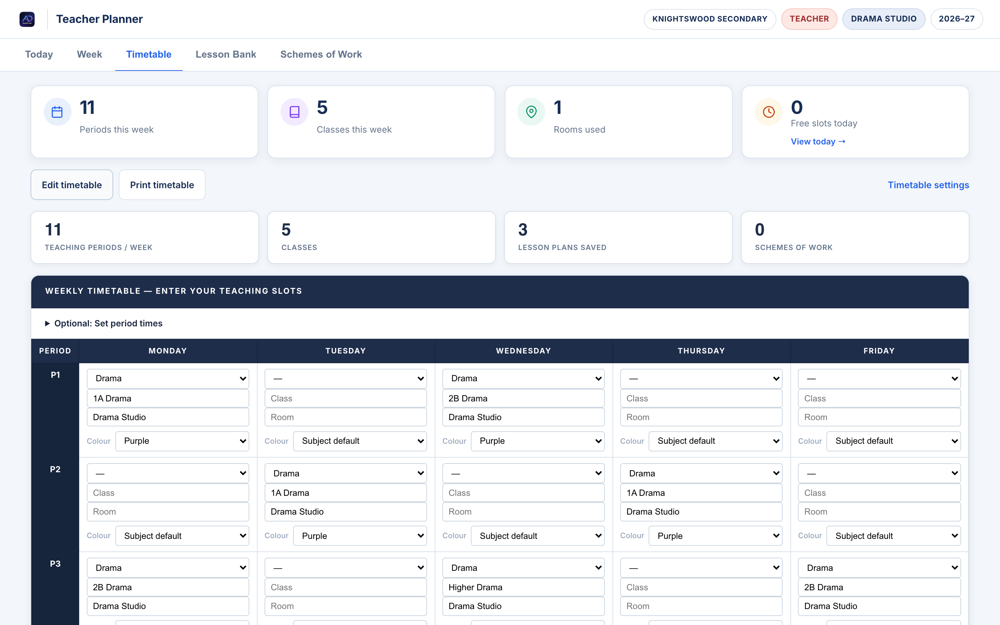
Demo Timetable · Edit gridThis is your “class list”
Once saved, the read-only timetable shows every class across the week. Stats at the top confirm periods, classes, and rooms.
- 1Scan Monday–Friday for missing periods
- 2Use Edit timetable again anytime a class code changes
- 3Prefer speed? Timetable settings → Import faculty timetable
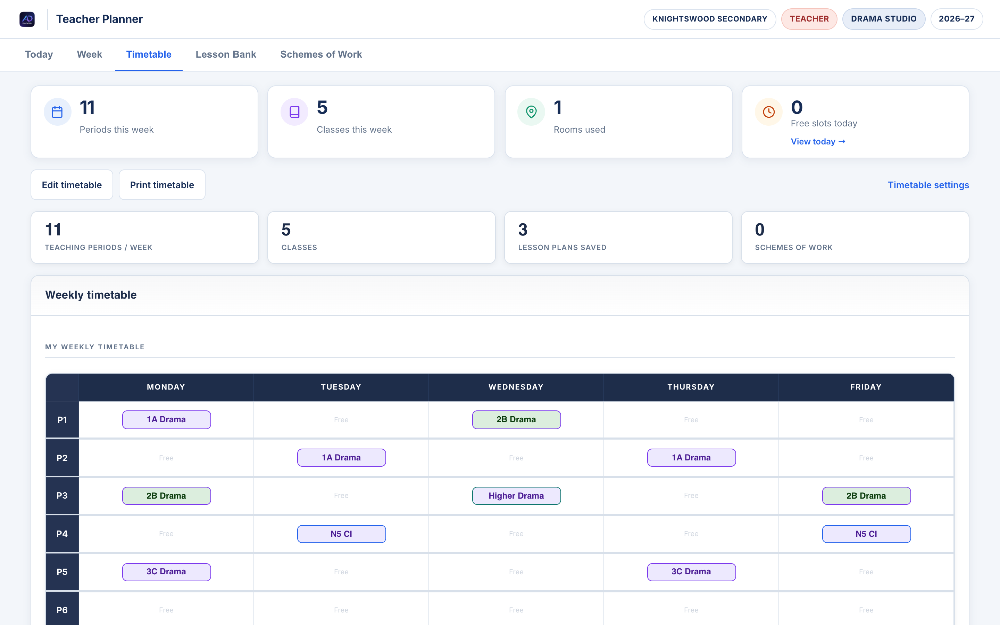
Demo 1A / 2B / 3C / N5 CI / HigherAttach a plan to a period
- 1Open the Week tab
- 2Click a period that has a class (e.g. Mon P1 · 1A Drama)
- 3Add title, intentions, activities → save as Planned / Draft
- 4Repeat for the periods that need planning this week
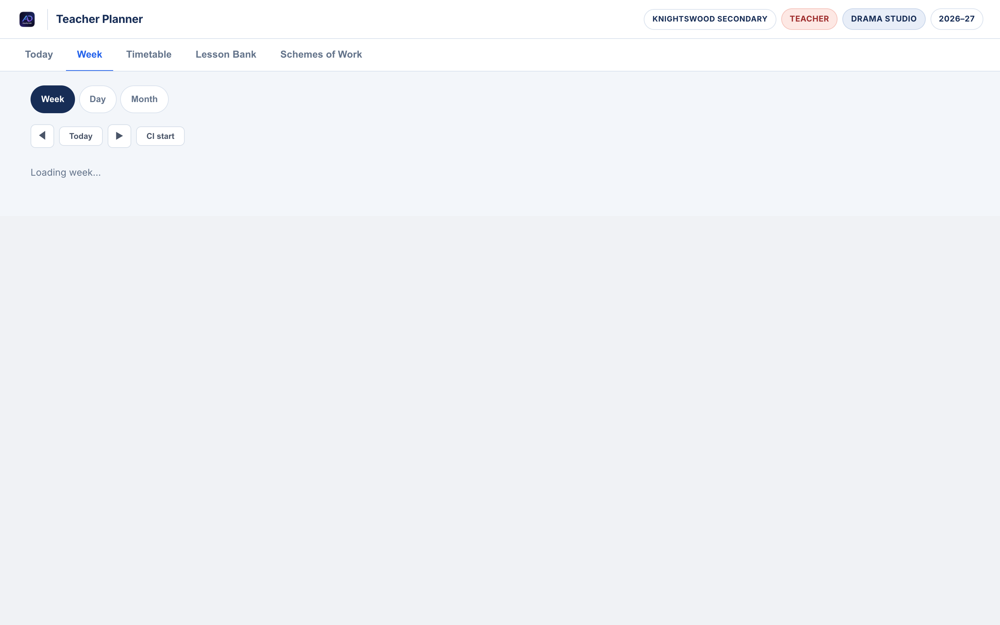
Demo Week · lessons on classesLesson Bank = your reusable kits
- 1Open Lesson Bank → + Add lesson
- 2Write a reusable block (warm-up, status scene, plenary…)
- 3Later: click Schedule on a card → pick date + period with your class
- 4Filter by Drama / Drafts / Planned as the bank grows
Create one bank lesson called “BGE Warm-up · Voice & focus”, then Schedule it onto next Monday’s first Drama class.
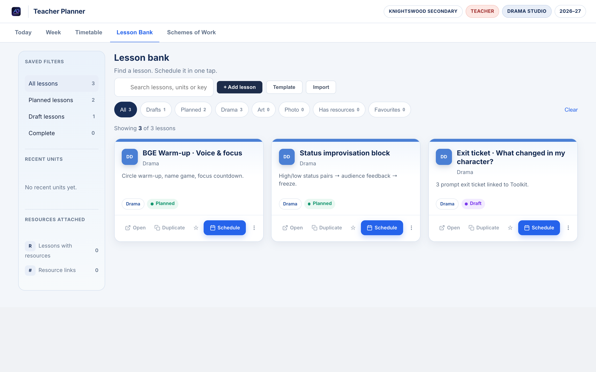
Demo Lesson Bank · 3 demo lessonsPlanner checklist
- Timetable has every class you teach (name + room)
- You’ve opened Week and attached at least one lesson plan
- Lesson Bank has 1–2 reusable starters you can Schedule
- You know Timetable settings → Import faculty timetable exists as a shortcut
Next chapter: Classroom Toolkit — what you launch on the board during those planned lessons.
Board-ready tools in under 30 seconds
No pupil accounts for the core tools. Favourite what you use, pin mental muscle memory for Timer → Quiz → Exit ticket.
Star favourites
Tap the star on Big Timer, Quiz Builder, Exit Tickets, Traffic Lights.
Fullscreen
Launch from the grid or Quick Launch, then go fullscreen on the board.
Starter / plenary
Timer for tasks, Quiz for check, Exit ticket to capture thinking.
Set up your Toolkit once
- 1Faculty Hub sidebar → Classroom Toolkit
- 2Star Big Timer, Quiz Builder, Exit Tickets, Traffic Lights, Quiz Busters
- 3Use Quick Launch on the right for one-click opens
- 4Filter by Timing / Quiz / Focus when you’re in a hurry
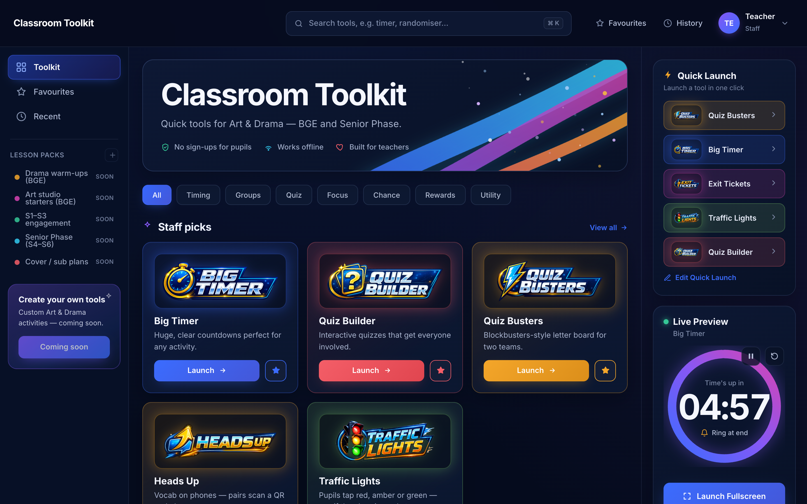
Demo Toolkit · favourites readyPace a task from the board
- 1Launch Big Timer
- 2Tap a preset (1–10 min) or type time → Set
- 3Label the activity (e.g. Group rehearsal · freeze frames)
- 4Fullscreen → Start · Space pauses · R resets · ±30s nudges
3-minute ensemble burst. Keep keyboard within reach so you never leave the circle.
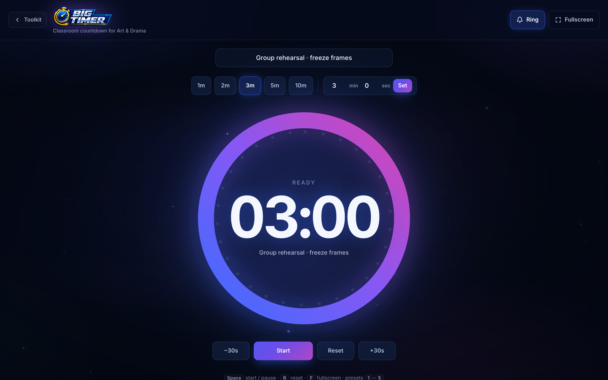
Demo Big Timer · labelledHost a plenary quiz
- 1Open Quiz Builder → use a sample or New quiz
- 2Click Host on the quiz card
- 3Choose Teacher paced (you reveal) or Pupil paced
- 4Start together / Fullscreen — phones need sign-in for live join; board-only still works
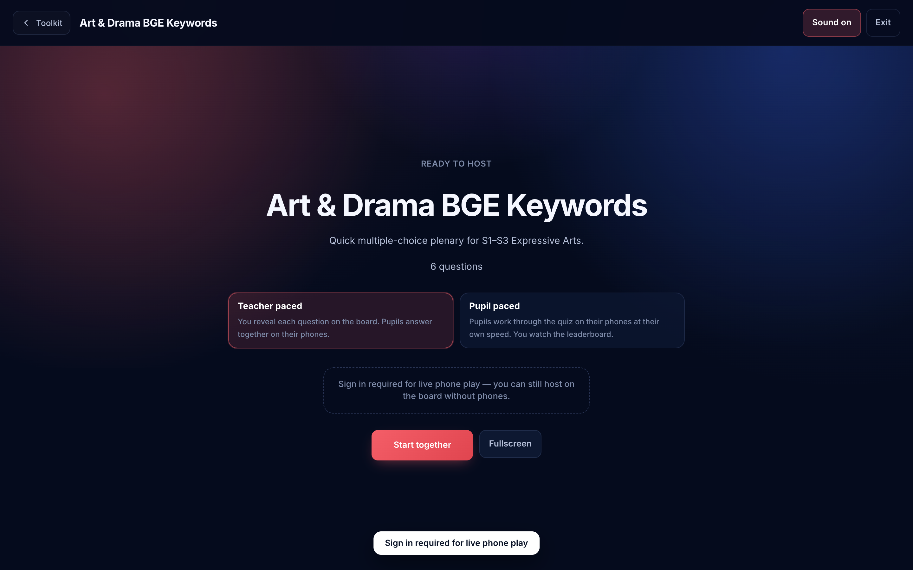
Demo Ready to host · BGE keywords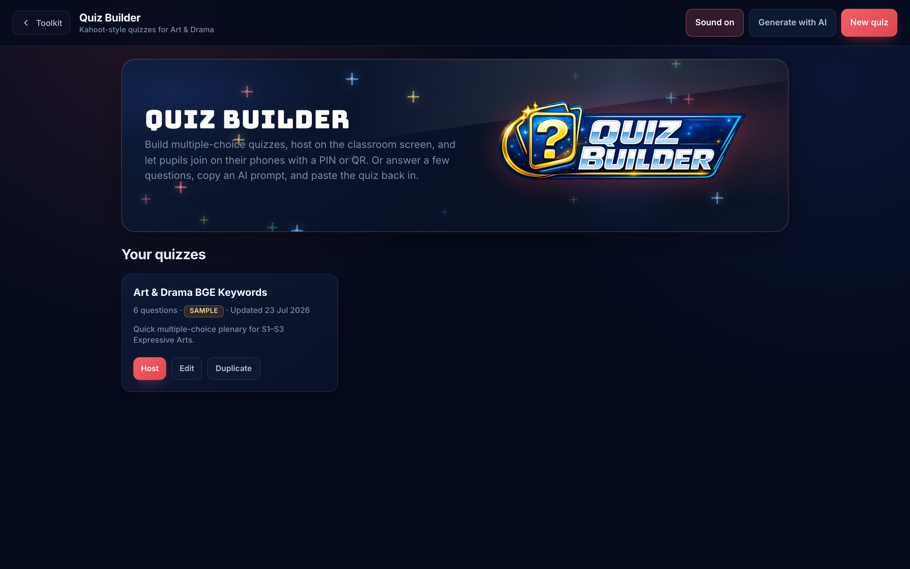
Quiz home · Host / Edit / Duplicate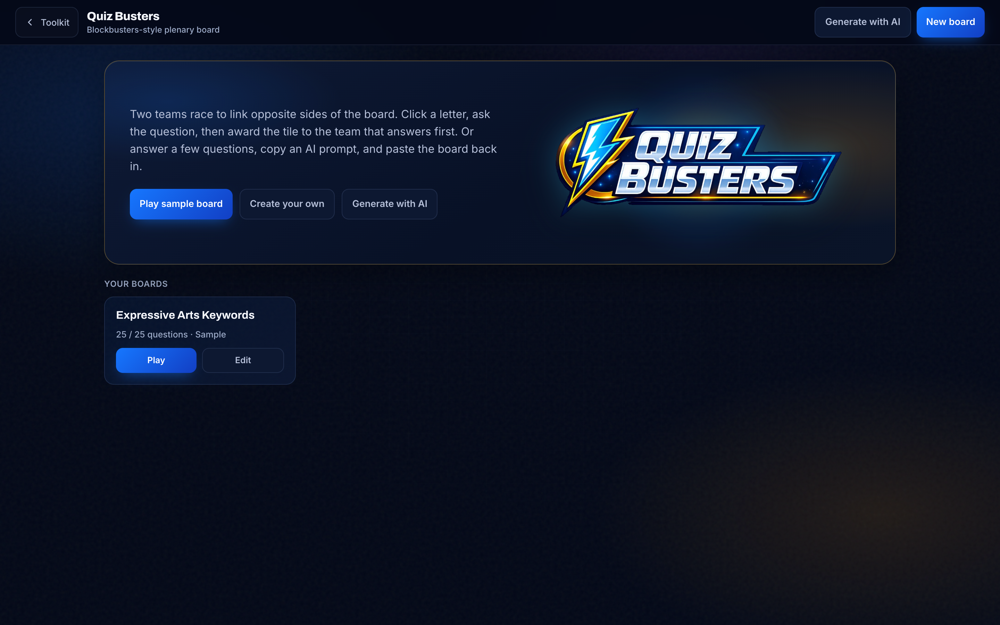
Quiz Busters · two-team energyPrivate answers → you approve
- 1Open Exit Tickets → New ticket or open a pack
- 2Write 1–3 short prompts → Launch
- 3Pupils join by QR; answers stay private until you approve them onto the board
“One skill I used well / one I’ll improve / who helped my group.” Approve three strong answers as tomorrow’s starter.
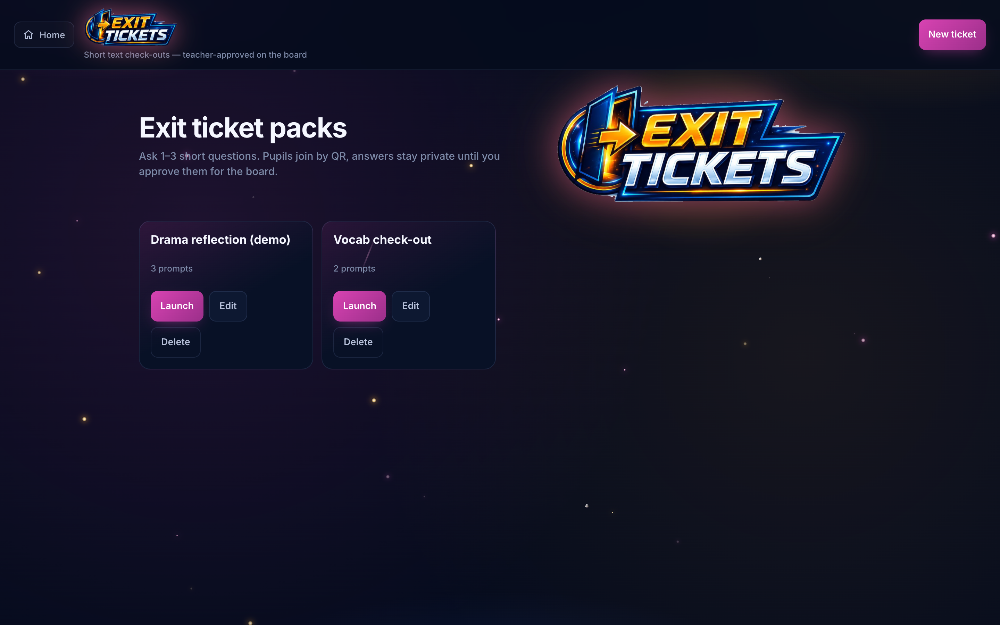
Demo Exit ticket packsTraffic Lights + Heads Up
- 1Traffic Lights — launch, pupils tap red/amber/green; watch confidence mid-task
- 2Heads Up — vocab on phones via QR for pairs games
- 3Star both so they sit in Favourites beside Timer & Quiz
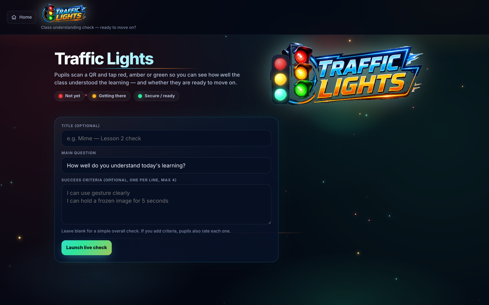
Traffic Lights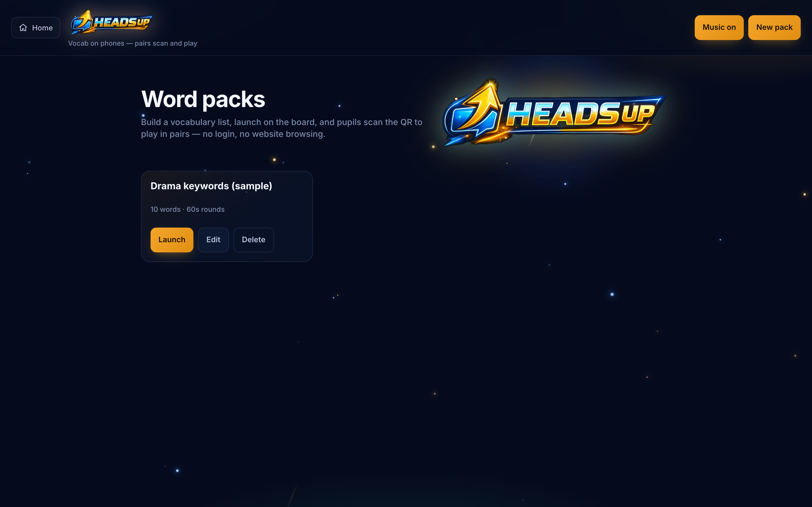
Heads UpToolkit checklist
- Five tools favourited (Timer, Quiz, Exit, Lights, Busters)
- You’ve fullscreened Big Timer once with a label
- You’ve opened Host on a quiz (even board-only)
- You’ve launched an exit ticket pack and know answers are approve-to-board
Different “classes”: tracking classes
Planner classes = timetable slots. Tracker classes = pupil lists for scores. You usually set both up at the start of term.
Add a class, then paste names
- 1Open Drama / Art / Photo Tracker
- 2Class Setup → year (S1/S2/S3) → type class name → + Add Class
- 3Add pupils one-by-one or Bulk add (paste names, one per line)
- 4Save — cloud sync when signed in
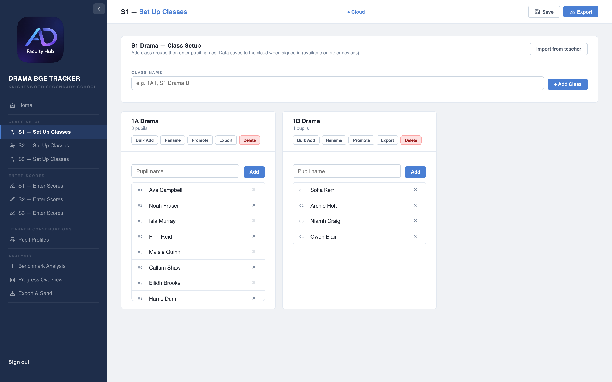
Demo S1 setup · demo classesScore a tracking point
- 1Enter Scores → pick year → select the class
- 2Choose the TP tab
- 3Tap 1–4 (or N/A) for Creating / Presenting / Evaluating + Effort · Behaviour · Home Learning
- 4Save — Export when FH asks for a snapshot
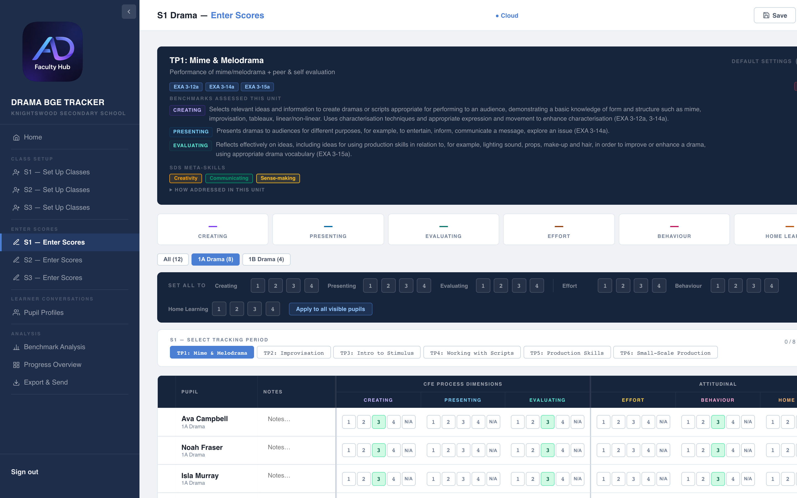
Demo Enter Scores · 1A DramaThis week
A 20-minute practice path
- 10 min — Import or edit your real timetable in Teacher Planner
- 5 min — Add one Lesson Bank starter and Schedule it
- 5 min — Favourite Toolkit tools; run Timer fullscreen once